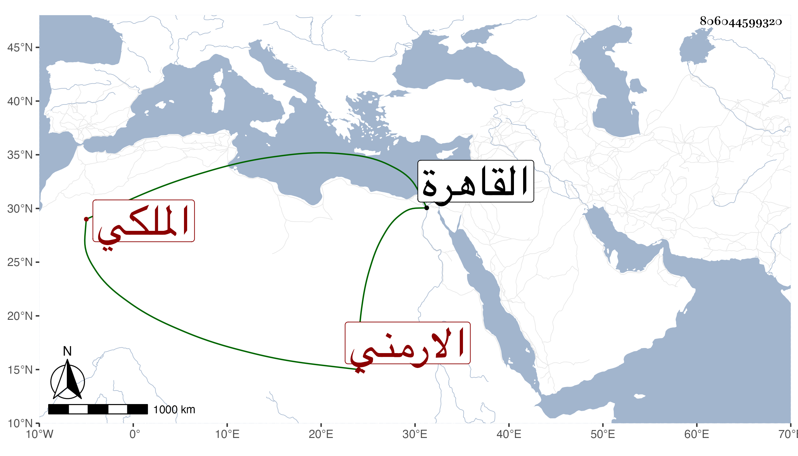

0902Sakhawi.DawLamic.ITO20230111-ara1.EIS1600.806044599320
Biography ID: 806044599320
721
عبد القادر بن عبد الغني بن عبد الرزاق بن أبي الفرج الارمني الأصل الملكي الماضي أبوه ويعرف بابن أبي الفرج . ولد في أوائل القرن تقريبا بالقاهرة ونشأ بها فتدرب بأبيه وغيره وباشر بعد أبيه عدة جهات حتى ولي شدة الخاص واستادارية المقام الناصري محمد بن الأشرف برسباي في جمادى الأولى سنة ثمان وعشرين ثم الاستادارية الكبرى عوضا عن البدر حسن بن نصر الله في شعبان منها فباشرها سنين وقاسى من الذل والهوان والعجز ما لا يوصف وتكرر استعفاؤه منها وهو لا يجاب إلى أن افتقر وتكامل عجزه فصرف حينئذ وذلك في ربيع الآخر سنة ثلاث وثلاثين بأقبغا الجمالي الكاشف بعد أن أخرب بلادا كثيرة ورسم عليه وطولب بالحساب فلم يلبث أن مات بالطاعون في سابع عشري جمادى الآخرة منها ، وكان شابا جميلا خفيف اللحية جسيما متواضعا مضى عمره في النكد والقهر والخوف وهو أصلح من أبيه وجده بكثير مع مزيد معرفته بطرق الظلم والعسف غير أنه لم يسعد في مباشرته بل خسر الدنيا والآخرة ولكن قال العيني أنه لم يزل يتلو القرآن وأنه لا بأس به وكأنه بالنسبة لأبيه سامحه الله وإيانا .
